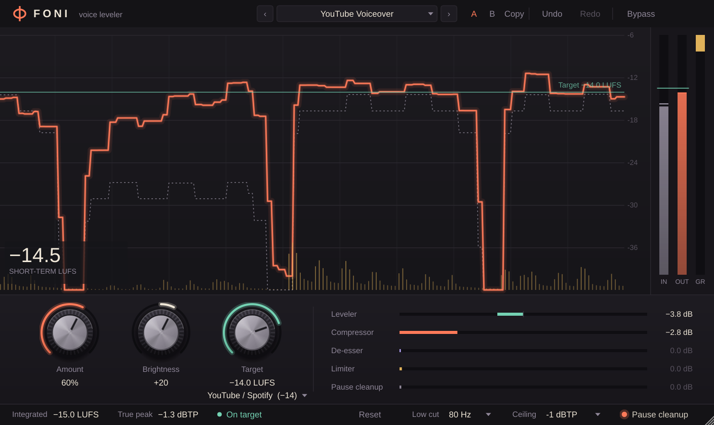

Audio plugins for the spoken voice.
Podcasts, YouTube, audiobooks, voice-over. We make small, focused tools that get a voice sounding steady and ready to publish, without a manual full of jargon.
Plugins

FONI
voice leveler · VST3 / AU / CLAP · Windows & Mac
Evens out quiet and loud moments, tames harsh "s" sounds, and lands your voice at the loudness Spotify, Apple Podcasts, YouTube or ACX expect. One Amount knob does most of the work.
- Presets for podcast, YouTube, audiobook (ACX) and more
- Level-matched Before button, so you hear honest results
- Live ACX check: RMS, peak and noise floor
About
Built for one job
Everything we make is about the spoken voice. No mixing suites, no hundred-knob racks.
Honest by design
Level-matched comparisons, real measurements, and guides that say what a plugin can't do as well as what it can.
Shaped by users
FONI is in public beta. Feedback from podcasters and narrators decides what changes next.
Contact
Questions, feedback, press or collaboration: revolveraudio.skg@gmail.com